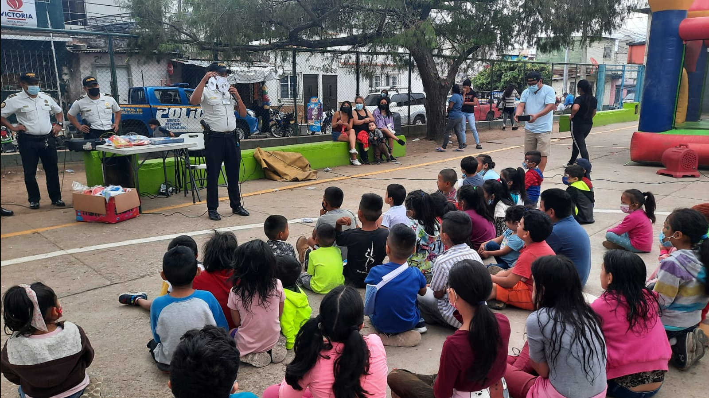
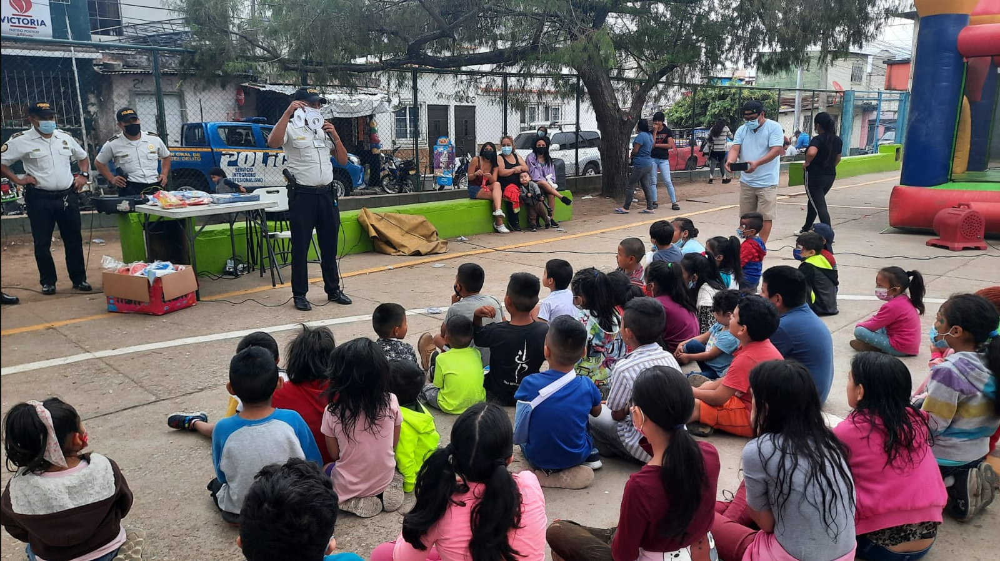
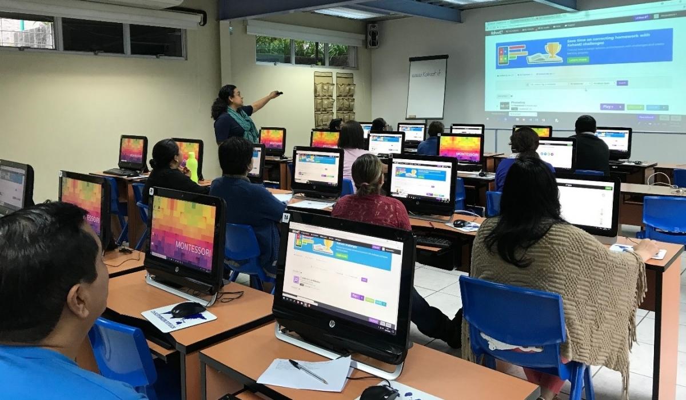
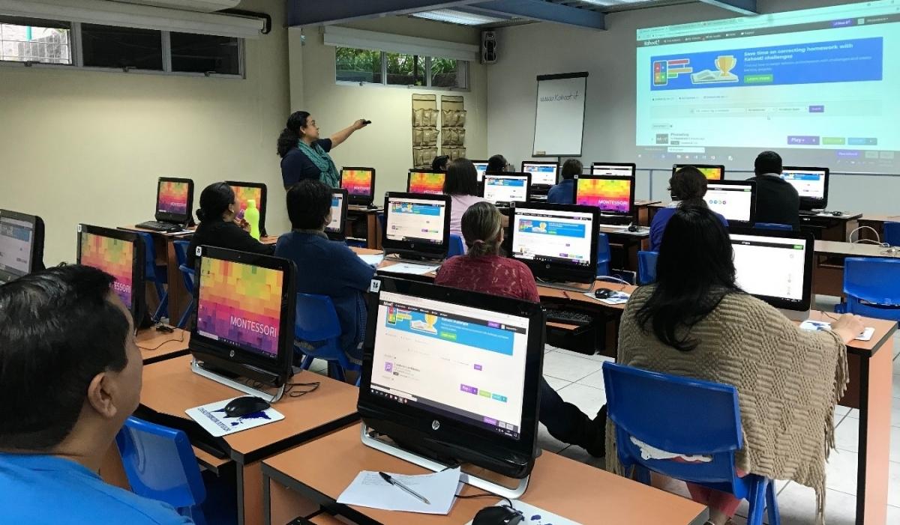
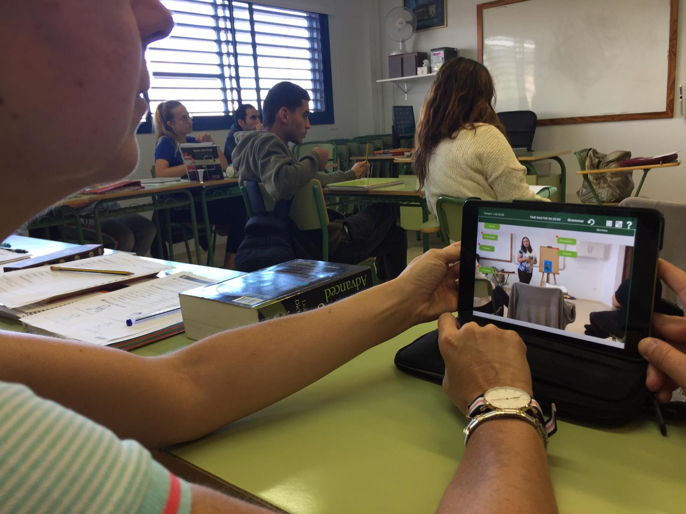
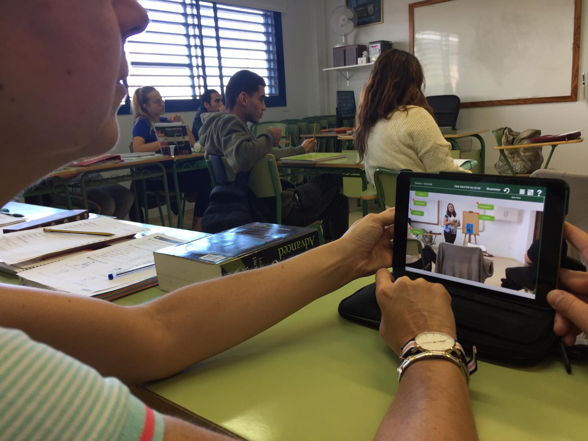
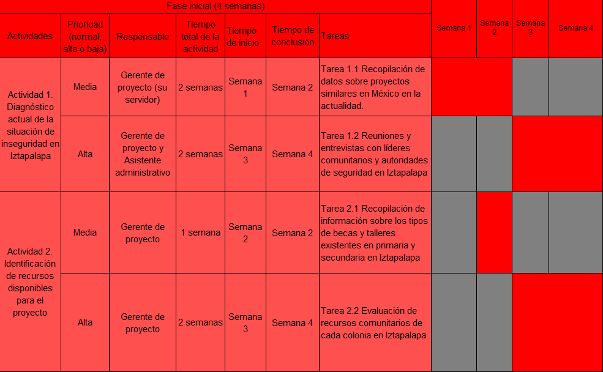
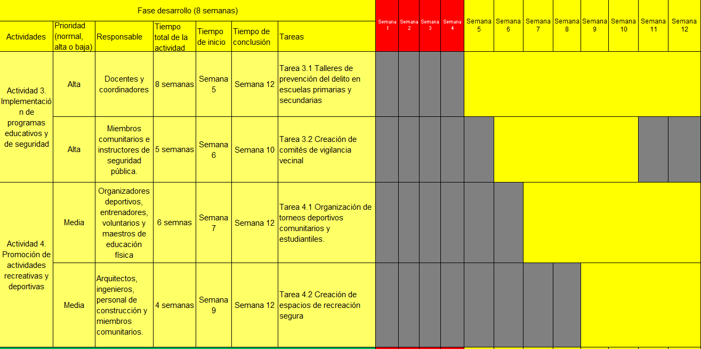
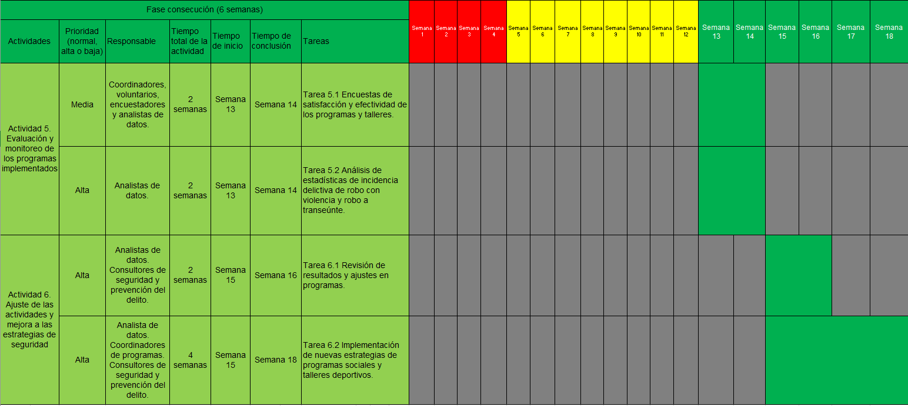
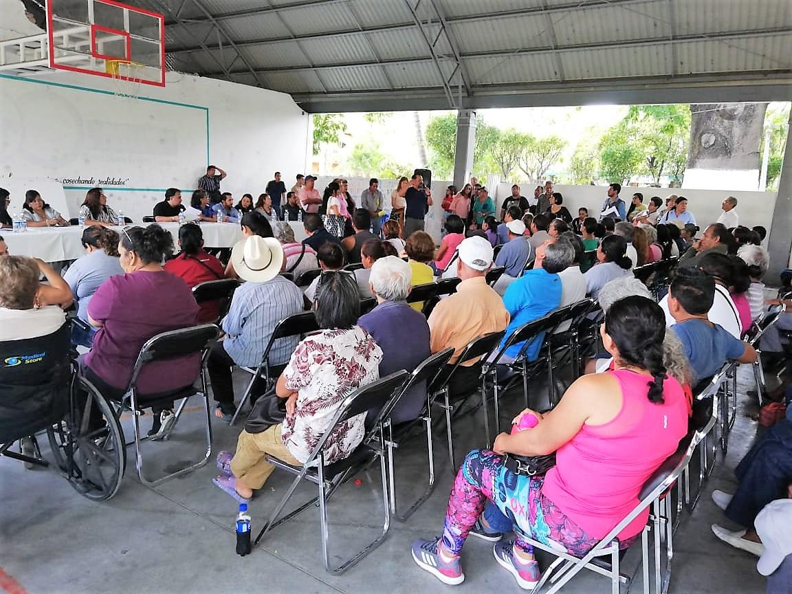

Objetivo General
El proyecto que pretendo llevar a cabo es para reducir la inseguridad de las incidencias delictivas de robo con violencia y robo a transeúnte en Iztapalapa Ciudad de México, se enfocará implementación de programas sociales en primarias y secundarias de las colonias de Iztapalapa, que busquen mejorar las condiciones económicas, sociales y educativas de los adolescentes vulnerables, asimismo, con la Implementación de programas de prevención del delito y talleres sobre la importancia de la salud y tecnología para la población de Iztapalapa.
 

Objetivos Específicos
- Mejorar las Condiciones Educativas y Sociales de los Adolescentes Vulnerables de primaria y secundaria.
- Implementar Programas de Prevención del Delito, deportivas, comités de vigilancia vecinal y de seguridad.
- Creación de espacios de recreación segura y mantenimiento de alumbrado público y videovigilancia.
- Promover la Importancia de la Salud y Uso de la Tecnología para el Desarrollo Personal y Profesional.
.PNG) 

Justificación
El proyecto tiene como fin mitigar la incidencia delictiva de robo con violencia y robo a transeúnte en la alcaldía de Iztapalapa, mediante la colaboración, ya que, es una problemática que afecta a la alcaldía de Iztapalapa gravemente, este problema se mitigara la implementación talleres de prevención del delito a la comunidad, mejora en la iluminación en nuestras colonias, así como cámaras de seguridad y rondines vecinales en cada colonia, fomentar talleres de la importancia del ámbito educativo y de la actividad física en nuestros adolescentes de escuelas primarias y secundarias, asimismo, programas sociales a nuestros adolescentes más vulnerables mediante becas mensuales lo que conlleva a una mejorara a las condiciones económicas, sociales y educativas para la comunidad, ya que, desde el punto de vista económico, la inseguridad genera costos para las empresas y para los hogares, y afecta la actividad comercial y la inversión.
Desde el ámbito económico, de acuerdo con un estudio del Instituto de Investigaciones Económicas de la Universidad Nacional Autónoma de México (UNAM), el costo económico de la inseguridad en la Ciudad de México fue de 186,000 millones de pesos, lo que representa el 5.4% del producto interno bruto (PIB) de la ciudad.
Desde ámbito social, la inseguridad genera miedo, desconfianza y desintegración, y afecta la calidad de vida y el bienestar de la comunidad. De acuerdo con la Encuesta Nacional de Victimización y Percepción sobre Seguridad Pública (ENVIPE) el 94.2% de los habitantes de Iztapalapa perciben que la inseguridad es un problema muy grave las colonias y barrios que conforman la alcaldía, y el 68.8% siente miedo de ser víctima de un delito. Además, que la incidencia de robo a transeúnte y robo con violencia representa el 23% de los delitos cometidos en nuestra alcaldía, lo que representan a 6 200 personas afectadas anualmente. Atendiendo a los objetivos del proyecto, esta situación de la percepción de inseguridad puede mejorar para el bienestar de nuestra comunidad sin temor a salir a las calles.
Desde el ámbito educativo, la inseguridad afecta el acceso, la permanencia y el rendimiento escolar de los estudiantes, y genera un clima de violencia y de impunidad en las escuelas. De acuerdo con un estudio de la Universidad Iberoamericana, el 62.5% de los estudiantes de la Ciudad de México han sido víctimas de algún tipo de violencia en la escuela, y el 44.5% considera que la inseguridad es un problema grave en su escuela.
De no llevarse a cabo el proyecto, la situación de inseguridad y violencia en Iztapalapa podría empeorar, generando costos económicos para las empresas y hogares, afectando la actividad comercial y la inversión, así como el acceso, la permanencia y el rendimiento escolar de los estudiantes. Además, la falta de oportunidades laborales y educativas podría generar un mayor descontento social y un aumento en la participación de la población en actividades delictivas.
 

Fases del Proyecto
La planificación es crucial para el éxito de cualquier proyecto, especialmente en proyectos complejos y de larga duración como este. Una planificación detallada asegura que todas las actividades se realicen de manera ordenada y eficiente, minimizando riesgos y optimizando recursos. En este proyecto de tres fases, la planificación proporciona una hoja de ruta clara desde la fase inicial de diagnóstico hasta la fase final de evaluación y presentación de resultados.
La asignación de prioridades y responsabilidades es fundamental para garantizar que cada actividad se ejecute con la atención y los recursos adecuados. Establecer tiempos específicos de inicio y conclusión para cada actividad permite un seguimiento riguroso del progreso y facilita la identificación temprana de posibles retrasos o problemas.
Además, la planificación semanal permite una gestión más granular del proyecto, asegurando que las tareas diarias y semanales se alineen con los objetivos generales. Esto no solo mejora la eficiencia, sino que también aumenta la capacidad de adaptación a cambios inesperados.
  Perfiles
Colaboradores
El proyecto tendrá la colaboración con instituciones gubernamentales como la Secretaría de Educación Pública y la Secretaría de Seguridad Ciudadana y líderes coloniales vecinales de las colonias de la alcaldía Iztapalapa, durante el año 2024,
Contacto
 Dirección: Rododendro 27, col. Los Ángeles Iztapalapa 09830 Ciudad de México
Dirección: Rododendro 27, col. Los Ángeles Iztapalapa 09830 Ciudad de México
Teléfono de Contacto: 5545437750
Correo Electrónico: jesusgarciaramírez.faleco@gmail.com